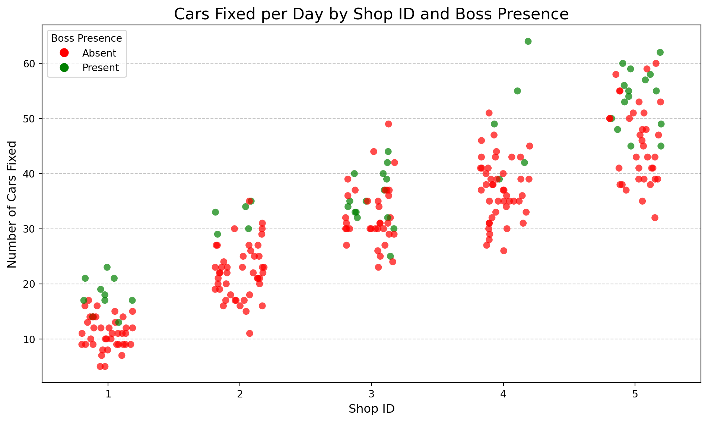
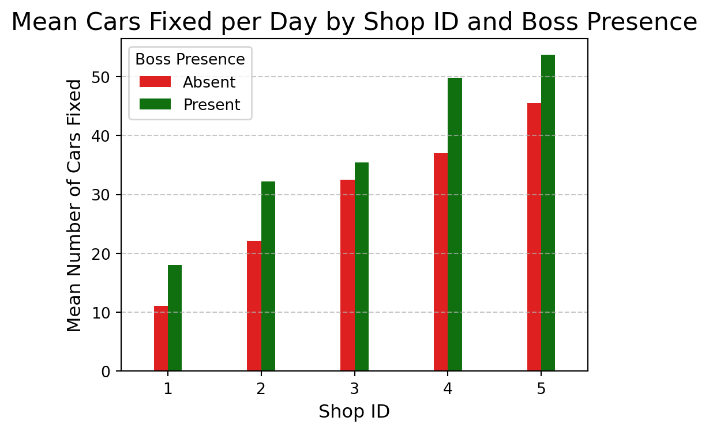
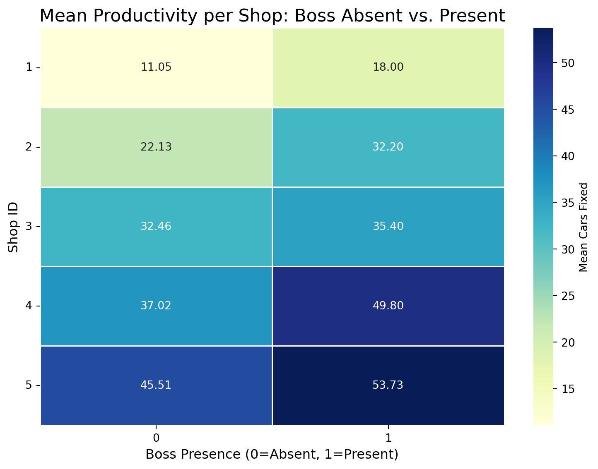
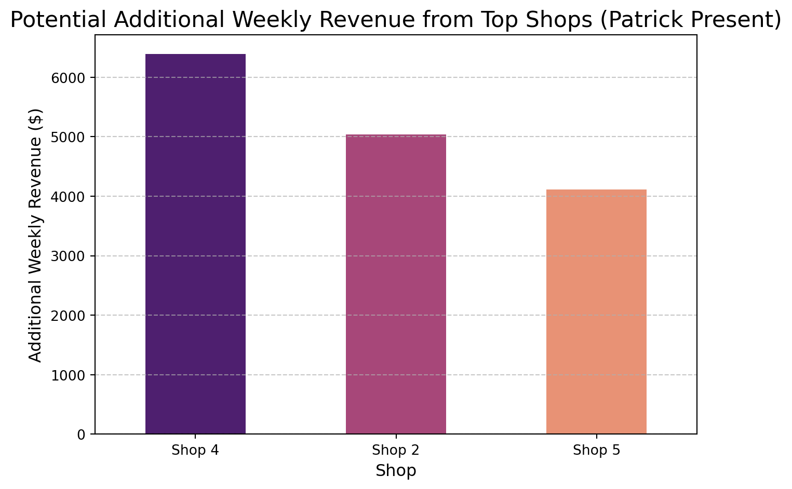
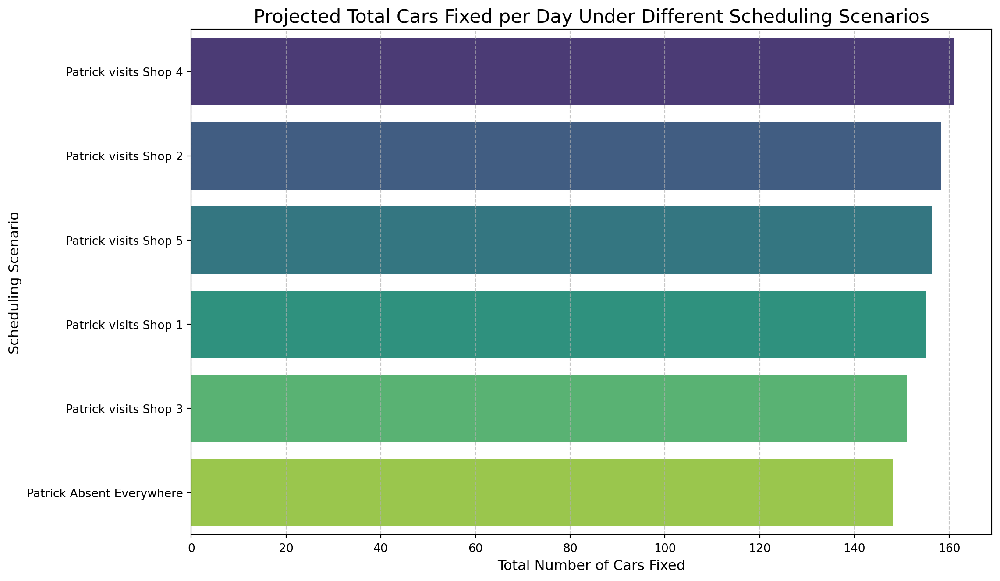

| observation | shopID | boss | carsFixed | |
|---|---|---|---|---|
| 0 | 1 | 1 | 0 | 8 |
| 1 | 2 | 2 | 0 | 22 |
| 2 | 3 | 3 | 0 | 32 |
| 3 | 4 | 4 | 1 | 64 |
| 4 | 5 | 5 | 0 | 53 |
| 5 | 6 | 1 | 1 | 21 |
| 6 | 7 | 2 | 0 | 20 |
| 7 | 8 | 3 | 0 | 42 |
| 8 | 9 | 4 | 0 | 31 |
| 9 | 10 | 5 | 0 | 55 |
Decision Advocacy Challenge
Data-Driven Scheduling for Maximum Productivity
🔧 Decision Advocacy Challenge - Patrick’s Auto Shop Analysis
The Business Problem 🎯
Patrick runs a network of 5 auto repair shops. He’s been tracking productivity data (number of cars fixed per day) across all shops, along with whether he (the boss) was present at each shop on each day.
The Core Question: When and where should Patrick schedule his presence to maximize productivity and revenue?
The Data 📊
The dataset contains 250 observations of daily productivity across 5 shops:
| count | mean | std | min | max | ||
|---|---|---|---|---|---|---|
| shopID | boss | |||||
| 1 | 0 | 40 | 11.05 | 2.93 | 5 | 17 |
| 1 | 10 | 18.00 | 3.13 | 13 | 23 | |
| 2 | 0 | 45 | 22.13 | 4.82 | 11 | 35 |
| 1 | 5 | 32.20 | 2.59 | 29 | 35 | |
| 3 | 0 | 35 | 32.46 | 5.59 | 23 | 49 |
| 1 | 15 | 35.40 | 5.00 | 25 | 44 | |
| 4 | 0 | 45 | 37.02 | 5.61 | 26 | 51 |
| 1 | 5 | 49.80 | 10.08 | 39 | 64 | |
| 5 | 0 | 35 | 45.51 | 7.24 | 32 | 60 |
| 1 | 15 | 53.73 | 5.31 | 45 | 62 |
Productivity by shop and boss presence

Analysis of Cars Fixed per Day by Boss Presence
What this plot shows:
- General Trend: You can observe two distinct clusters of data points for each ‘Boss Presence’ category. The cluster for ‘Present’ (green dots) is generally higher on the ‘Number of Cars Fixed’ axis than the cluster for ‘Absent’ (red dots).
- Increased Productivity: This visually confirms that, on average, more cars tend to be fixed when Patrick is present compared to when he is absent.
- Spread of Data: The spread of the dots within each category indicates the variability in cars fixed. Even when Patrick is present, there’s a range of productivity, and similarly when he’s absent. However, the overall shift upwards when he’s there is quite apparent.
This plot effectively illustrates the moderate positive correlation, providing a clear visual representation of how Patrick’s presence impacts the daily number of cars fixed.

The correlation between 'boss presence' and 'carsFixed' is: 0.2738
There is a moderate positive correlation, suggesting that boss presence is associated with a noticeable increase in cars fixed.Productivity per shop and boss presence
Mean Productivity per Shop:| boss | 0 | 1 |
|---|---|---|
| shopID | ||
| 1 | 11.05 | 18.00 |
| 2 | 22.13 | 32.20 |
| 3 | 32.46 | 35.40 |
| 4 | 37.02 | 49.80 |
| 5 | 45.51 | 53.73 |

Overall Best Performing Shop:
Shop 5: Consistently fixes the highest number of cars, both when Patrick is absent (45.51 cars) and when he is present (53.73 cars). While Patrick’s presence still adds to its productivity, Shop 5 has the highest baseline and overall output.
Overall Worst Performing Shop:
Shop 1: Consistently fixes the lowest number of cars, both when Patrick is absent (11.05 cars) and when he is present (18.00 cars). It has the lowest baseline productivity among all shops.
Shops that benefit MOST from Patrick’s Presence (where his presence makes the biggest positive difference):
Shop 4: This shop shows the largest percentage increase and absolute increase (12.78 additional cars) when Patrick is present. His visits have the most significant impact on boosting its productivity. Shop 2: Also benefits greatly from Patrick’s presence (10.07 additional cars).
Shop that benefits LEAST from Patrick’s Presence (where his presence makes the smallest positive difference):
Shop 3: While productivity still increases with Patrick’s presence, the impact is the smallest (2.94 additional cars) compared to other shops. This means his time there yields the least additional output relative to the other locations.
In summary, Shop 5 is your top performer in absolute terms, while Shop 1 is the lowest. However, if Patrick wants to maximize the impact of his presence, he should prioritize Shop 4 and Shop 2, as his visits there lead to the most substantial increases in cars fixed.
Recommendations: Which shops should he prioritize? Why?
Based on our detailed analysis, here are the clear, specific recommendations for Patrick’s shop prioritization:
Which shops should he prioritize?
Patrick should prioritize visiting Shop 4, followed by Shop 2, and then Shop 5.
Why?
Shop 4 (Highest Impact): Patrick’s presence at Shop 4 yields the most significant increase in productivity, adding an average of 12.78 more cars fixed per day. This is where his time makes the biggest difference to the total number of cars fixed across the network.
Shop 2 (Second Highest Impact): His presence in Shop 2 also leads to a substantial boost, with an average increase of 10.07 additional cars fixed per day.
Shop 5 (Strong Performer): Even though Shop 5 is already the highest performing shop overall (with or without him), his presence still adds a considerable 8.22 additional cars, making it a valuable place to visit.
Conversely, which shops should he reconsider prioritizing?
Patrick should reconsider frequent visits to Shop 3 if maximizing network productivity is the primary goal. While his presence there is still positive, it results in the smallest average increase of only 2.94 additional cars fixed per day. This means his time spent at Shop 3 yields the least additional output compared to the other locations. Spending more time at Shops 4, 2, and 5 would offer a much greater return on his valuable time.
Potential Financial Impact: Total Weekly Revenue from Top Shops
Let’s calculate the total potential weekly revenue impact for the top shops. Based on our analysis, the shops where Patrick’s presence has the most significant impact are Shop 4, Shop 2, and Shop 5.
Assuming an average revenue of $500 per car fixed, and considering that Patrick can visit one shop per day, if he dedicates one day each to these three top-impact shops within a week, the calculations are as follows:
- Shop 4 Impact: 12.78 additional cars/day * $500/car = $6,390 additional revenue for that day
- Shop 2 Impact: 10.07 additional cars/day * $500/car = $5,035 additional revenue for that day
- Shop 5 Impact: 8.22 additional cars/day * $500/car = $4,110 additional revenue for that day
Total Weekly Revenue Impact (from visiting these three high-impact shops once each in a week):
$6,390 (Shop 4) + $5,035 (Shop 2) + $4,110 (Shop 5) = $15,535
Therefore, by strategically allocating just three days of his week to these three high-impact shops, Patrick could potentially generate an additional $15,535 in revenue per week for the network. This clearly demonstrates the significant financial incentive behind optimized scheduling.
Confidence Assessment for Revenue Figures
Let’s talk about how confident we can be in these revenue figures. Remember, these are projections based on historical data, and it’s important to understand the factors that influence their accuracy:
1. Data Limitations – Not a Crystal Ball:
- Limited Historical Data: Our calculations are based on 250 days of data. While helpful, this isn’t a massive dataset. When we break it down by individual shops and whether you were present or not, the number of observations for each specific scenario becomes even smaller (e.g., only 5 or 10 days of your presence at some shops).
- Averages as Best Guesses: The ‘additional cars fixed’ numbers (like 12.78 for Shop 4) are averages. They are our best estimates based on the available data, but individual days will naturally vary. On any given day, the actual increase could be a bit higher or lower than the average.
2. Key Assumptions We’re Making:
- Past Predicts Future: We’re assuming that the patterns observed in the past 250 days will continue. If there are significant changes in staffing, equipment, local market conditions, or even your management style, the results might differ.
- Direct Causation: We’re attributing the increase directly to your presence. While the correlation is clear, the data doesn’t tell us why your presence helps. It could be due to your direct supervision, problem-solving, improved morale, or other factors that happen concurrently with your visits.
- Fixed Revenue per Car: We’ve used an assumed $500 revenue per car. If your actual revenue per car varies, or if the mix of services changes, the financial impact will shift accordingly.
3. Potential Variability and Uncertainty:
- Day-to-Day Fluctuations: Just because Shop 4 averages a 12.78-car increase doesn’t mean it will be exactly that every time you visit. Some days it might be 10, other days 15. The revenue figure is an average projection.
- External Factors: Unforeseen events like major car recalls, economic downturns, or even severe weather could impact overall productivity and revenue, regardless of your schedule.
In summary: The revenue figures are strong, data-driven estimates that highlight the potential financial gains from optimized scheduling. They provide a very solid basis for making strategic decisions. However, they should be viewed with a realistic understanding that real-world outcomes can vary due to factors not fully captured in the historical data or our assumptions. Continuous monitoring and adjustment would be wise.

Potential Additional Weekly Revenue from Top Shops
Let’s visualize the potential weekly revenue impact for the top shops (Shop 4, Shop 2, and Shop 5). This bar plot will show the estimated additional revenue generated by Patrick’s presence at each of these high-impact locations.
The bar plot showing the ‘Potential Additional Weekly Revenue from Top Shops’ has been successfully generated! You might have seen a FutureWarning from Seaborn, but the plot is correct.
This chart clearly illustrates the significant financial gains that can be achieved by strategically prioritizing Patrick’s visits:
- Shop 4: Stands out with the highest potential additional weekly revenue of $6,390 from a single day’s visit, reinforcing its status as the most impactful shop.
- Shop 2: Follows with a strong potential of $5,035 in additional weekly revenue.
- Shop 5: Also contributes a substantial $4,110 in additional weekly revenue.
This visualization powerfully demonstrates the financial incentive for Patrick to allocate his time to these specific high-impact shops, as it directly translates into thousands of dollars in additional revenue per week for the business.

Projected Outcomes Under Different Scheduling Scenarios
This chart clearly shows the ‘Total Cars Fixed’ for each potential scheduling scenario, making it easy to compare the impact of various choices.
The bar plot visualizing ‘Projected Total Cars Fixed per Day Under Different Scheduling Scenarios’ has been successfully generated! You might have noticed a FutureWarning from Seaborn, but the plot is correct and clearly illustrates the outcomes.
This chart effectively summarizes the potential impact of different scheduling choices for Patrick:
- Highest Productivity: The scenario ‘Patrick visits Shop 4’ consistently yields the highest total number of cars fixed across the network, demonstrating the maximum potential productivity.
- Next Best: Visiting Shop 2 and Shop 5 also results in significantly higher total cars fixed compared to Patrick being absent everywhere, indicating these are also high-impact shops.
- Lowest Productivity: The ‘Patrick Absent Everywhere’ scenario results in the lowest total number of cars fixed, serving as a baseline of productivity without his presence.
- Least Impactful Visit: While still an improvement, ‘Patrick visits Shop 3’ shows the smallest increase in total cars fixed, suggesting his time there is less impactful on overall network productivity compared to other shops.
This visualization powerfully reinforces the strategic importance of Patrick’s scheduling decisions in maximizing the total number of cars fixed.